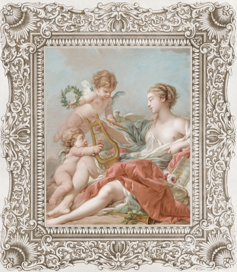

A Beleza do Rococó
O estilo rococó surgiu na Europa durante o século XVIII e ficou conhecido por suas cores suaves, formas delicadas e temas românticos. Muitas obras desse período retratavam cenas leves e elegantes, com figuras mitológicas, querubins e elementos musicais. A pintura apresentada representa perfeitamente essa estética refinada, marcada pela harmonia visual e pela riqueza de detalhes ornamentais.
